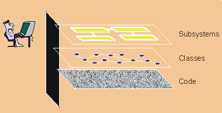

| Concept: Visual Modeling |
 |
|
| Related Elements |
|---|
 Visual modeling raises the level of abstraction Visual modeling is the use of semantically rich, graphical and textual design notations to capture software designs. A notation, such as UML, allows the level of abstraction to be raised, while maintaining rigorous syntax and semantics. In this way, it improves communication in the design team, as the design is formed and reviewed, allowing the reader to reason about the design, and it provides an unambiguous basis for implementation. How visual models helpA model is a simplified view of a system. It shows the essentials of the system from a particular perspective and hides the nonessential details. Visual models help you:
Increase understanding of complex systemsThe importance of models increases as systems become more complex. For example, you can build a doghouse without blueprints. However, as you progress to building houses and then to skyscrapers, your need for blueprints becomes pronounced. Similarly, a small application built by one person in a few days may be easily understood in its entirety. However, an e - commerce system with tens of thousands of source lines of code (SLOCs) or an air traffic control system with hundreds of thousands of SLOCs can no longer be easily understood by one person. Constructing models allows a developer to focus on the big picture, understand how components interact, and identify fatal flaws. Among the various types of models are these examples:
Modeling is important because it helps the team visualize, construct, and document the structure and behavior of the system without getting lost in complexity. Explore and compare design alternatives at a low costYou can create and modify simple models inexpensively to explore design alternatives. Innovative ideas can be captured and reviewed by other developers before investing in costly code development. When coupled with iterative development, visual modeling helps developers assess design changes and communicate these changes to the entire development team. Form a foundation for implementationToday, many projects employ object-oriented programming languages to build reusable, change-tolerant, and stable systems. To get these benefits, it is even more important to use object technology in design. The creation of visual models, whether on paper; around a whiteboard; or in a modeling tool, can help a team to gain agreement on key aspects of the system before investing time in proving their ideas with code. Having a shared model of the system promotes collaboration within the team, encouraging everyone to work towards the same goal. With the support of appropriate tools, you can use a design model to generate an initial code for implementation. This is referred to as forward engineering or code generation. You can also enhance design models to include enough information to build the system. Reverse engineering may also be applied to generate design models from existing implementations. You can use this method to evaluate existing implementations. Round-trip engineering combines both forward and reverse engineering techniques to ensure consistent design and code. Combined with an iterative process and the right tools, round-trip engineering allows you to synchronize the design and code during each iteration. Capture requirements preciselyBefore building a system, it's critical to capture the requirements. Specifying the requirements using a precise and unambiguous model helps to ensure that all stakeholders can understand and agree on the requirements. A model that separates the external behavior of the system from the implementation of it helps you focus on the intended use of the system, without getting bogged down in implementation details. Communicate decisions unambiguouslyThe Unified Modeling Language (UML) is a consistent notation that can be applied for system engineering, as well as for business engineering. According to these excerpts from the UML specification, a standard notation::
UML represents the convergence of the best practice in software modeling throughout the object-technology industry. For more information on the UML, see [UML05]. |
This program and the accompanying materials are made available under the |